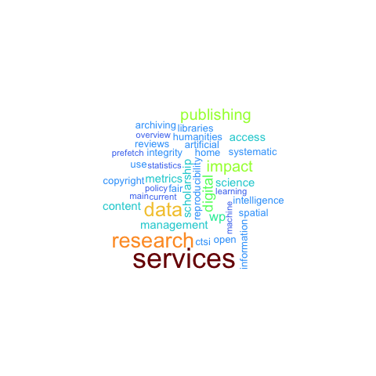

library(rvest)
library(polite)
library(tidyverse)
library(tidytext)
library(wordcloud)
library(RColorBrewer)
# Create a polite session
url <- "https://uflib.ufl.edu/"
session <- bow(url)
# Scrape and parse the page respectfully
page <- scrape(session)
# Extract visible text (adjust CSS selectors if needed)
text_data <- page %>%
html_elements("body") %>%
html_text2()
# Turn into a tidy tibble
words_df <- tibble(text = text_data) %>%
unnest_tokens(word, text) %>%
anti_join(get_stopwords()) %>%
count(word, sort = TRUE)
# Filter for top 50 and create word cloud
top_words <- words_df %>%
filter(n > 2) %>%
slice_max(n, n = 50)
# Set seed for reproducibility
set.seed(123)
png("wordcloud1.png")
wordcloud(words = top_words$word,
freq = top_words$n,
min.freq = 2,
scale = c(3, 0.5),
colors = brewer.pal(8, "Dark2"))
dev.off()As I’ve come to believe through both research and experience, to build community, we have to do science publicly, in the open.
This is not a new idea. I’ve heard it over and over with the R community, and in open science circles. I can probably track this down to David Robinson’s RStudio::conf(2019) talk, or more recently, my friend Andrew Heiss. There are significant gains in productivity and value when we work in the open. We have also seen this specifically for the movements of open source, open data, and open science. We know that open research practices democratize access, improve inclusion, and push for more accountability. This doesn’t apply just to science, and I realized I was in a perfect position to actually live this principle out loud as I am currently preparing for a faculty interview for a tenure-track Computational Literacy Librarian position, and I’ve decided to document how I plan and build my presentation.
In this post, I’ll share my process and my 🧠, to prepare in a way that’s transparent, reproducible, and community-minded. My hope is that if you’re preparing for an academic interview, building a computational workshop, or just trying to demystify how data and tech get used in real life, you’ll find something useful here.
The problem with traditional interview prep
Most academic interview prep happens behind closed doors. If you are lucky, you have built a network to ask for feedback, practice presentations, and ask questions. But even then, roles vary widely and expectations too. I have personally benefitted greatly from ecoevojobs general discussion. So, I thought writing a blog post about preparing for this job interview was a valid thing to share. The job description is very broad, and honestly was a little intimidating to me, which is why I didn’t even think of applying at first. I asked ChatGPT, given the following job description, can you give me a three sentence summary for what this position entails?, this was the response:
“The Computational Literacy Librarian leads campus-wide efforts to enhance data and AI literacy through instruction, consultations, and program development. They support researchers in using data science tools, accessing datasets, and applying ethical and reproducible practices. The role involves collaboration across the university to build sustainable, forward-looking services that advance research and teaching.”
I can do that! So I asked myself: What would it look like to prepare for this role by practicing exactly that? Let’s get started!
I applied for this role a few months ago (February?) and had a phone interview (end of March). I followed up after about a month (May 1st) and was very happy to get a response! However, the response was that they were moving forward with other candidates. Not the outcome I was hoping for, but grateful for not getting ghosted, I moved on. Fast forward to June and I received an email where I was invited to the onsite interview, scheduled for the end of the month (June 25). I share this timeline because applying for jobs takes time, and so much patience and uncertainty. Timelines are different across job types and institutions, so maybe having this one as a data point is helpful to someone.
The phone interview
I was surprised, but in a good way, by how standardized their phone interview was. This was a zoom interview with a panel of folks (the search committee), and cameras were off. In fact, I was supposed to call from my phone to this zoom scheduled meeting, to keep things consistent among all candidates. I was sent a list of 10 questions ahead of time (this was new for me). Funny enough, I had recently applied and interviewed for a lecturer position, and the interview was very different. I guess I had some expectation that these interviews would be similar, given they were at the same university, but I couldn’t have been more off.
In my ingenuity, I read those questions and took them as sort of a guide for the phone conversation. Key element here, I thought it would be a conversation, more like my previous interview, where we had cameras on and chatted. I did not realize that in the current interview, I would just get asked the questions and I was supposed to just answer them (pretty straight forward). Looking back, I should have had written down my answers, instead of jotting down bullet points of my ideas and thinking I would go with the flow. Anyways, I am just sharing, since all of this was new to me. Uncertain if I can share those questions in this blog, so maybe I’ll have to come back to this section.
Prepping for the on site
I have heard folks say that on site interviews begin the minute you get off the plane and meet with someone, until you get back on that plane. My interview is a full day, begins at 8 am, and ends with dinner. I am a local candidate, so no airport pick ups or hotel. My overall schedule looks a little like this:
- Meet search committee
- Meet department
- Give 20 minute talk, Q&A
- Tour
- Lunch
- Meet faculty supervisor
- Meet deans
- Meet tenure promotion folks
- Meet with HR
- Break
- Dinner
Over the last couple of weeks I have looked up the people I will be meeting and tried to learn about them. I have heard that you should have good questions prepared. But was is a good question anyways? I have tried to approach this with curiosity and true interest. I like to get to know people, and understand what drives their curiosity. A lot of my questions revolve around: what do you enjoy the most? What has been challenging and how have you approached it? What does a regular day look like for you? Is there a change in seasons with your work, for example how does summer look versus fall or spring? But I am also hoping to have meaningful and honest conversations that just flow. Who knows! Maybe I am approaching this all wrong, I guess we will figure it out.
The tools I’m using
Trusty web searches to help me understand concepts, and find people. The first one: what is computational literacy? Because in my mind, and the job I think I applied to, this means helping people learn and understand how to use computational (programming, tech, AI) tools to do their research. For me, this also means empowering folks to share their knowledge and become mentors of computational literacy themselves. I would be providing resources, giving workshops, one-on-one consultations, and guides (what to do when and why?). I have absolutely been doing this for years, started with volunteering and informal trainings to peers, and lately in my role with Posit Academy.
AI (ChatGPT)
Instead of only writing alone, I’m using ChatGPT as a collaborative drafting tool. I get in my head and second guess myself all the time. Sometimes, ChatGPT helps me get unstuck. I use it to:
- Outline my ideas after dictating my scattered brain onto a word doc.
- Clarify job expectations based on the position description.
- Add comments to my code and build summaries of what I have done.
- Validation.
I treat ChatGPT not as an authority, but as a thinking buddy, a way to get over writing blocks or the dreaded how do I even begin?.
Slides with Quarto
Because I believe in public scholarship, I’m building my slides in Quarto, so that not only can my presentation (and this blog post) live on my website, but also so that the source code is available too. I’ll post:
- My full presentation link
- This blog post (hi! 👋) source_code
- The code for my web scraping example
That way, even if I don’t get the job, the materials live on, and maybe they help someone else prepare, teach, or apply.
Why build in the open?
I don’t remember when I first came across the concepts of open science and open source. I started coding in R in 2013, but it wasn’t until 2017 that I learned about the reproducibility crisis in science (I think this was at an intro course in graduate school). Then with my work with RLadies and the R community, openness was a key theme, along with inclusivity and transparency.
Doing this work in public creates:
- Accountability: I hold myself to a higher standard when I know others might see my process.
- Visibility: It’s one way to show the work that often stays invisible in academic spaces.
- Replicability: If someone else wants to use this approach, they can fork it, copy it, remix it.
Also, if I’m applying to lead a computational literacy program, I want to demonstrate from the beginning that I value open-source practice andreproducible science. One of the biggest challenges I have faced in the last few years is doing work that can’t be shared openly, so I saw this interview as an opportunity to break that.
Using ChatGPT as my friend
Throughout this process, I’ve used ChatGPT as a thinking buddy, not a replacement for original work. I came in with uncertainty about the job, the prep, even whether I belonged in this role. What I found was that the AI helped me structure ideas, summarize my brain dumps, and connect my relevant experience to the job description. Additionally, it helped me refine my questions and suggest new ones based on my interests and capabilities. From building outlines to role playing, it functioned like a super-powered brainstorming buddy. I used the free version of ChatGPT. Importantly, to get the AI to be helpful, I needed to tailor it and provide context, detailed enough prompts and establish clear guidelines for what I wanted as a result.
💬 Prompts That Worked Well
Here are a few of the prompts that worked well and led to especially productive interactions. One of the things I like about ChatGPT is the ability to turn my scattered, brain dumpy thoughts into structured and organized outlines. I use this tool often, as a person with a neurospicy brain, I often require help to break down tasks and organize. I used to do this by journaling and rewriting, revisiting over and over again, and I still do. But I also take advantage of the time savings that an AI can give me. Knowing that I don’t have to write nicely, helps me put words down, a strategy from research writing, except I don’t have to go back and edit my writing in this case, I outsource that to ChatGPT.
2. I wanted some help framing my talk, without asking it for ideas about my talk. Since, the ideas were mine and I just needed some organization help. You will notice my prompts are not one sentence, they are long, and a little redundant sometimes.
I am building a presentation for the on site interview. It is only a 20 minute presentation on how to grow a computational literacy program to support research across campus. My first thought is that, the way we have programs grow (or scale) is by building a community. This is what I am familiar with from RLadies, the R community, and just open science in general. There are multiple lenses to look at this: we want to provide materials, guides, but also spaces and community. You can have all the resources in the world, but if there is not a culture that pushes for reproducibility, open access, and ethical use of computational tools, then we can’t grow. Borrowing from my work as a mentor at Posit, my goal is always to empower learners so that they also feel compelled to share what they learn and know. Building safe spaces for learning while providing resources is what I would think of. So, as a summary, I would start from a structured decision making approach given my experience. Identify the problem/objective, of scaling a program. Surveying the landscape and what is out there as far as resources. Generally, encouraging working publicly in the open, transparency, and providing social spaces to build literacy as a culture, not just a curriculum.
From here, the AI provided me an outline with 9 slide titles and key points. Some relevant, some not as much. But it was helpful to see how my experience could be organized to a slide deck.
3. I wanted to do this openly, writing a blogpost, sharing the code, and running a small reproducible example. Specifically, in the part of what is out there I thought, maybe I could do some web scraping and see what we get.
I am preparing for this onsite interview and trying to follow the guidelines and concepts that I support, such as reproducibility, open source, transparency. Even though my presentation is only 20 minutes, I thought it would be good to blog about my interview prep and share how I used you (ChatGPT) to organize and structure my thoughts and ideas. I also want to share the blog and presentation source code, since they are written in quarto, and host them on my website. Additionally, I think it could be fun to have a very small web scraping example to survey the UF library website to see what we have in terms of ai workshops and guides, or resources for computational literacy. I am sure there are many. I would like your help building a very small toy example of web scraping with R, making it respectful so probably use rvest() and polite() to check for key terms. I would also like to build a wordcloud.
I have to admit, I love the upbeat, cheerful, and encouraging tone I get from ChatGPT. This is the first thing it replies to this prompt:
That’s a fantastic idea, Javi — you’re modeling the exact principles you want to promote: reproducibility, transparency, public scholarship, and open tooling. A small, respectful web scraping project paired with a blog post and Quarto-powered presentation will be a standout portfolio piece for your interview.
From there, it provided me with some code, which I explored:

I was hoping to build a fun toy example that I could use to show what is out there from the libraries in regards of training and resources to promote computational literacy. I quickly realized this is a project that is valuable, but requires more time and effort. So, I pivoted and decided my web scraping example would just go at the end of my presentation, as I had plenty of other content. Below, I dive a little deeper into the world cloud I built.
Web Scraping with R
My very first introduction to web scraping was with the R for data science book, not that long ago, and I thought it was a good place to start. I really love that one of the first things taught is bringing awareness to the legalities and ethics of web scraping! Mainly because I had no idea about it, and it was not something that I had ever thought of. In general, you want to make sure the data is public, that you follow the website’s robots.txt, and that there is no personally identifiable information. In the first prompt, I asked ChatGPT to use the the polite R package to ensure respectful scraping that honors the site’s robots.txt rules and avoids overloading servers. This small project targets public, non-sensitive pages and limits requests to stay within fair use.
The first iteration of code captured all the general website text, but it didn’t focus on computational literacy content. Then I realized, I was looking at the general Smathers Library website, and I should probably focus on ARCS or the services page. So, I went with that one.
# Create a polite session
url <- "https://arcs.uflib.ufl.edu/services/"
session <- bow(url)
# Scrape and parse the page respectfully
page <- scrape(session)
# Extract visible text (adjust CSS selectors if needed)
text_data <- page %>%
html_elements("body") %>%
html_text2()
# Turn into a tidy tibble
words_df <- tibble(text = text_data) %>%
unnest_tokens(word, text) %>%
anti_join(get_stopwords()) %>%
count(word, sort = TRUE)
# Filter for top 50 and create word cloud
top_words <- words_df %>%
filter(n > 2) %>%
slice_max(n, n = 50)
# Set seed for reproducibility
set.seed(187)
png("wordcloud2.png")
wordcloud(words = top_words$word,
freq = top_words$n,
min.freq = 2,
scale = c(3, 0.5),
colors = viridis::viridis(n = 15, option = "H"))
dev.off()
As someone applying for a role that involves AI literacy, I wanted to model thoughtful, transparent use of these tools, and invite conversation about how we use AI in academic and community spaces. Update I got the job!
🤖 AI-assisted · Human-authored
Citation
BibTeX citation:
@online{rudolph2025,
author = {Rudolph, Francisca Javiera},
title = {Preparing for a Computational Literacy Role by Practicing
Computational Literacy},
date = {2025-06-19},
url = {https://javirudolph.github.io/posts/2025-06-19-computational-literacy/},
langid = {en}
}
For attribution, please cite this work as:
Rudolph, Francisca Javiera. 2025. “Preparing for a Computational
Literacy Role by Practicing Computational Literacy.” June 19,
2025. https://javirudolph.github.io/posts/2025-06-19-computational-literacy/.